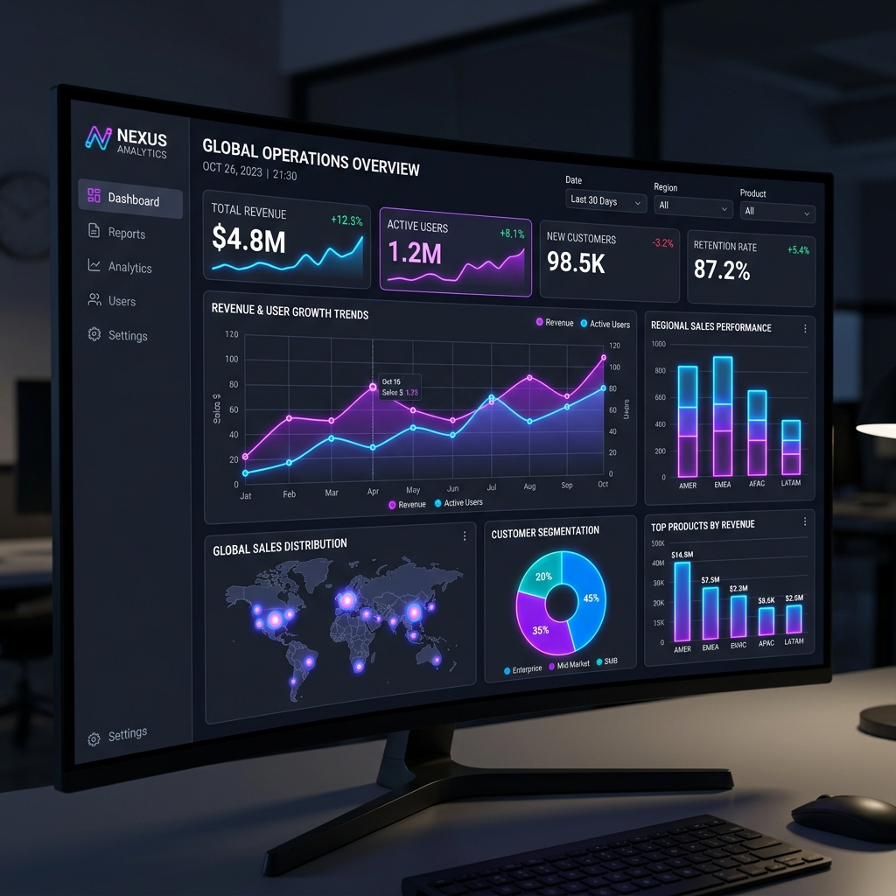
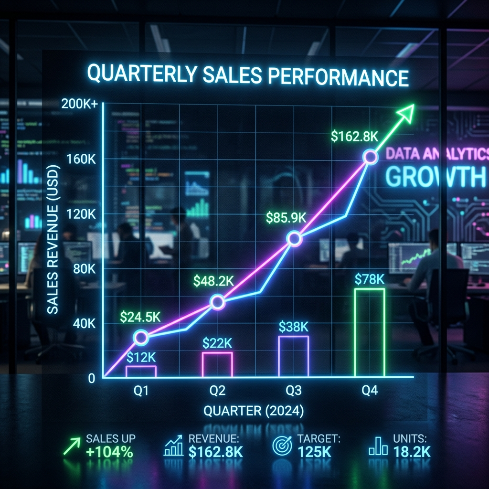
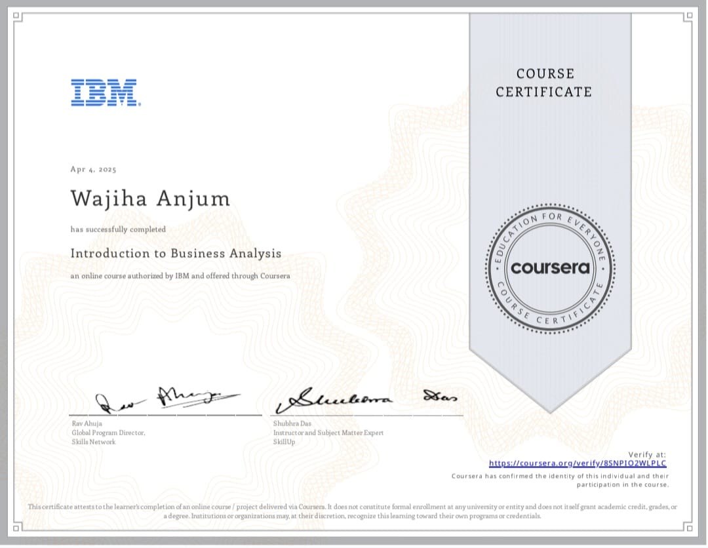
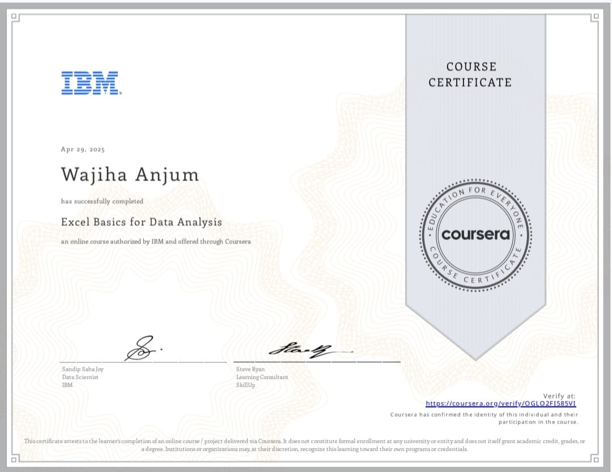
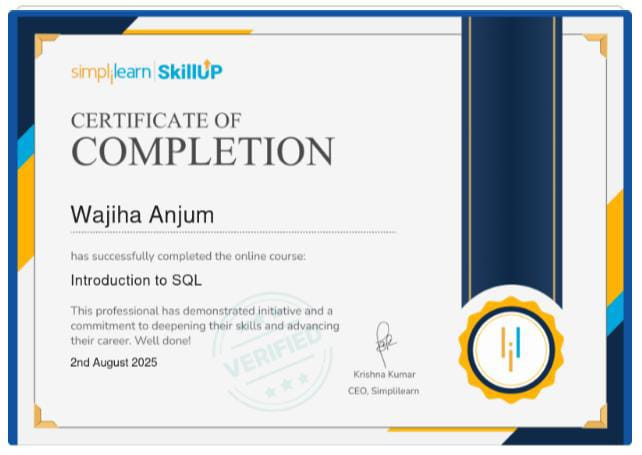

Hello, I'm
Wajiha Anjum
Business Analyst | Data Analyst
Data Analyst skilled in SQL, Excel, and Power BI, focused on transforming raw data into actionable insights and business decisions.

Hello, I'm
Data Analyst skilled in SQL, Excel, and Power BI, focused on transforming raw data into actionable insights and business decisions.
Processed and analyzed datasets containing over 100,000+ rows using SQL and Python to uncover operational inefficiencies.
Developed dynamic Power BI dashboards that reduced reporting time by 30%, providing stakeholders with real-time insights.
Cleaned complex time-series data and identified key trends leading to a more accurate pricing prediction model.
Automated data entry workflows using Excel VBA, improving overall efficiency and minimizing manual data handling errors.
Gained hands-on experience in cleaning, analyzing, and visualizing large datasets. Delivered actionable insights through dashboards and reports to support data-driven decision-making and improve organizational performance.
• Collected and analyzed freelance marketplace data (Upwork, Fiverr) using Python to study
cybersecurity service demand and pricing trends.
• Developed Power BI dashboards and market intelligence reports to identify high-demand
opportunities and support strategic go-to-market decisions.
Focus: Analyzed key demographic and academic factors influencing student performance.
Analysis: Performed rigorous Exploratory Data Analysis (EDA) and established statistical correlations.
Impact: Uncovered actionable trends to help predict and improve overall educational outcomes.
Cleaning: Rigorous data cleaning by fixing missing values, duplicates, and outliers.
EDA: Used Pandas and NumPy for deep Exploratory Data Analysis (EDA) and automation.
Result: Transformed raw datasets into clean formats ready for high-level business intelligence.

Design: Built a dynamic Power BI dashboard to track regional sales performance.
Logic: Utilized DAX and advanced visuals for deep insights and KPIs.
Feature: Enabled interactive filtering for stakeholders to drill down into specific sales regions.

Design: Designed a comprehensive Power BI dashboard to visualize and track key student performance metrics.
Analysis: Aggregated educational data to evaluate demographic impacts, test scores, and learning outcomes.
Impact: Empowered educators to monitor success rates and identify critical areas for academic intervention.
Dashboard: Developed a comprehensive, interactive business dashboard directly within Excel.
Analysis: Leveraged advanced Pivot Tables and Power Query to process and visualize Superstore sales data.
Efficiency: Streamlined data workflows to provide real-time insights into profitability and regional performance.

Focus: Developed a comprehensive market intelligence report using Power BI.
Logic: Applied advanced DAX calculations to visualize complex market trends and competitive landscapes.
Impact: Provided stakeholders with deep insights to drive strategic project selection and business growth.
Design: Developed an interactive Power BI dashboard for comprehensive sales performance tracking.
Analysis: Integrated extensive business data to design robust KPIs and measure revenue growth.
Impact: Facilitated rapid data-driven decisions by identifying top-performing regions and optimizing sales strategies.
A predictive modeling project focused on forecasting future petrol prices by analyzing the historical relationship between global petroleum trends and the USD exchange rate.
Fluctuations in the USD exchange rate significantly impact domestic petrol prices, causing uncertainty and budget challenges for businesses and consumers who rely on transportation.
Developed a deep learning–based petrol price forecasting system using LSTM (Long Short-Term Memory) to analyze time-series data. Integrated key economic indicators including Brent crude oil prices, USD/PKR exchange rate, and petroleum levy to improve prediction accuracy.
The predictive model successfully forecasted petrol prices with high accuracy, demonstrating a strong correlation with the USD exchange rate and providing reliable estimates for future price adjustments.
This project successfully highlights how data analytics and machine learning can be used to mitigate economic uncertainty by providing robust, data-driven forecasts for essential commodities like petrol.
Sep 2022 - June 2026


